Disclaimer: These notes are used for STAT 709 “Mathematical Statistics” at the University of Wisconsin–Madison. They are a learning aid rather than a substitute for a textbook, and corrections are welcome.
Lecture 2 supplied measurable sets, measures, and random variables. We now build integration with respect to a measure and study the theorems that make the construction useful. The main practical question is: \[\textit{When may a limit, sum, derivative, or iterated integral be exchanged with integration?}\] The answer is never “because the expressions look well behaved.” Each exchange requires assumptions that control signs, monotonicity, or magnitude.
Applications. For example, an average loss can be written as an integral against an empirical measure, a population risk is an integral against a probability law, and a likelihood calculation may require differentiating an integral.
Common language. The same notation should handle a finite sum, a continuous density, and a law containing both point masses and a continuous part.
Workflow. We will build this common language first, then ask which assumptions justify each exchange.
The shrinking-spike example below returns to Lecture 2’s warning that pointwise limits need not preserve area.
Learning goals
After this lecture, you should be able to:
interpret integration with respect to Lebesgue, counting, and probability measures;
determine whether a measurable function is integrable;
state and apply the monotone convergence theorem (MCT), dominated convergence theorem (DCT), and Fatou’s lemma;
distinguish Tonelli’s theorem from Fubini’s theorem and use each with the correct assumptions;
diagnose standard failures of limit and order exchanges;
recognize an ordinary density or mass function as a Radon–Nikodym derivative; and
use a likelihood ratio to change the measure under an expectation.
1. Abstract integration
Throughout this section, \((\Omega,\F,\nu)\) is a measure space. We use \[\mathbf 1_A(\omega)=\mathbf 1\{\omega\in A\}\] for an indicator function. The defining calculation is \[\int \mathbf 1_A\,d\nu=\nu(A).\] Integration extends this measure-weighted sum in three steps.
A nonnegative simple function has a representation \[\phi=\sum_{i=1}^k a_i\mathbf 1_{A_i},\] where \(0\le a_i<\infty\) and \(A_1,\ldots,A_k\in\F\) may be taken pairwise disjoint. Define \[\int\phi\,d\nu=\sum_{i=1}^k a_i\nu(A_i).\] We use the convention \(0\cdot\infty=0\). The value does not depend on the chosen representation; the common-refinement argument in Section 6 explains why.
For a nonnegative measurable function \(f:\Omega\to[0,\infty]\), define \[\int f\,d\nu = \sup\left\{\int\phi\,d\nu: 0\le\phi\le f,\ \phi\text{ simple and measurable}\right\}.\] The value may be \(+\infty\).
Every nonnegative measurable \(f\) can be approximated from below by simple functions: \[0\le\phi_1\le\phi_2\le\cdots\uparrow f.\] This fact connects the definition to the monotone convergence theorem. An explicit dyadic construction and its verification are given in the final proof details.
For a real-valued measurable function \(f\), define \[f^+=\max(f,0),\qquad f^-=\max(-f,0).\] Then \[f=f^+-f^-, \qquad |f|=f^++f^-.\]
A measurable function \(f\) is integrable with respect to \(\nu\) if \[\int|f|\,d\nu<\infty.\] Equivalently, both \(\int f^+\,d\nu\) and \(\int f^-\,d\nu\) are finite. In this case, \[\int f\,d\nu=\int f^+\,d\nu-\int f^-\,d\nu.\]
Convention and qualification. Requiring absolute integrability avoids the undefined expression \(\infty-\infty\). More generally, a signed integral is well defined as an extended real number if at least one of \(\int f^+\) and \(\int f^-\) is finite. We reserve “integrable” for \(\int|f|<\infty\); a conditionally convergent improper integral is not an integrable signed Lebesgue integral.
Properties. For integrable \(f\) and \(g\) and scalars \(a,b\), the integral satisfies \[\begin{split} \int(af+bg)\,d\nu &=a\int f\,d\nu+b\int g\,d\nu,\\ f\le g\text{ a.e.} &\Longrightarrow \int f\,d\nu\le\int g\,d\nu,\\ \left|\int f\,d\nu\right| &\le\int|f|\,d\nu. \end{split}\] If \(f=g\) \(\nu\)-almost everywhere, then their integrals agree whenever the integrals are defined.
Almost everywhere and almost surely.
Meaning. A property holds almost everywhere (a.e.) with respect to \(\nu\) if it fails only on a zero-measure set, also called a null set: a measurable set \(N\) with \(\nu(N)=0\). We write \(\nu\)-a.e. when the measure needs to be explicit. For a probability measure \(P\), the corresponding phrase is almost surely (a.s.).
Countable statements. The exceptional set is understood to be contained in a measurable null set; all functions in our integral statements are measurable. Countably many a.e. statements can be enforced simultaneously because a countable union of null sets is null.
Warning. The same conclusion need not hold for an uncountable family of null sets. For example, every singleton in \([0,1]\) has Lebesgue measure zero, while their union has measure one.
The abstract notation packages several familiar operations.
Lebesgue measure.
Measure and notation. When \(\nu=m\) is Lebesgue measure on \(\R^d\), write \[\int_{\R^d}f(x)\,dx \quad\text{instead of}\quad \int_{\R^d}f\,dm.\]
Connection to calculus. If a function is Riemann integrable on a bounded rectangle, its Lebesgue integral has the same value (using the completed Lebesgue measure if needed). A precise proof reference is given in the Riemann comparison below.
Counting measure.
Measure and sum. On \(\N\), let \(\nu_{\mathrm{count}}\) denote counting measure. Then \[\int_{\N}a(k)\,d\nu_{\mathrm{count}}(k) = \sum_{k=1}^{\infty}a(k)\] whenever the nonnegative or absolutely convergent expression is defined.
Use. Thus the convergence theorems for integrals also provide theorems for interchanging infinite sums and limits.
Probability measure.
Preview only: probability measure and CDF notation. We will soon cover the definition of expectation in future lectures.
Expectation and law. For a random variable \(X\) on \((\Omega,\F,P)\) and a Borel function \(h\), \[\E[h(X)] = \int_\Omega h(X(\omega))\,dP(\omega) = \int_{\R}h(x)\,dP_X(x),\] whenever either side is well defined. The second equality is the law of the unconscious statistician or pushforward identity. It says that an expectation may be computed either on the original sample space or from the law of \(X\). Its indicator-to-function proof is supplied in the final proof details.
CDF notation. For a CDF \(F_X\), the notation \[\int h(x)\,dF_X(x)\] is shorthand for integration with respect to the probability measure \(P_X\) determined by \(F_X\); it does not mean ordinary integration with respect to the pointwise derivative of \(F_X\).
Instructor’s NoteAn informal picture: what carries the weight?
Think of \(d\nu\) as specifying where the weight lies. Counting measure puts one unit at each integer, a probability law distributes total weight one, and Lebesgue measure assigns length or volume. The integral combines the function values with those weights. For an empirical measure \(P_n=n^{-1}\sum_{i=1}^n\delta_{x_i}\), this gives \[\int h\,dP_n=\frac1n\sum_{i=1}^nh(x_i).\] Indeed, integrating against \(\delta_{x_i}\) evaluates \(h\) at \(x_i\), and finite linearity combines the point masses. This is a mental picture, not a definition of an infinitesimal \(d\nu\). The measurable-function construction above makes it precise even for a mixture of atoms and continuous mass.
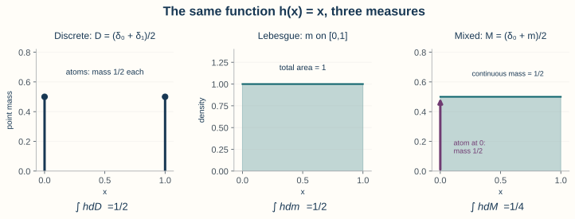
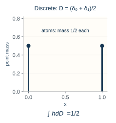
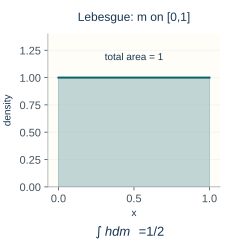
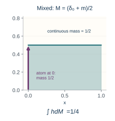
For a concrete comparison on \([0,1]\), take \(h(x)=x\) and the measures \(D=(\delta_0+\delta_1)/2\), \(m\), and \(M=(\delta_0+m)/2\). Then \(\int h\,dD=1/2\), \(\int h\,dm=1/2\), and \(\int h\,dM=1/4\): the atom at zero contributes zero, and the uniform continuous part contributes its mass times \(\int_0^1x\,dx=1/2\). The same function is weighted differently. A general measure need not be either wholly discrete or wholly described by a density against length.
1.1. Connection between Lebesgue integrals and Riemann integrals
Low priority—not examined: Riemann comparison and the fundamental theorem
Let \(m\) be Lebesgue measure on \([a,b]\) (completed when needed). The abstract integral preserves the familiar calculus rules, while enlarging the class of integrable functions. The following four connections make this precise.
Agreement where the Riemann integral exists. If \(f\) is Riemann integrable on \([a,b]\), it is Lebesgue integrable and \[\mathop{\mathrm{Riemann}}\int_a^b f(x)\,dx =\int_{[a,b]}f\,dm.\] Indeed, the Lebesgue integral lies between the lower and upper step-function sums, whose difference tends to zero. See [2] (Theorem 11.33) for a full proof.
The criterion for Riemann integrability. A bounded function on \([a,b]\) is Riemann integrable if and only if it is continuous almost everywhere: its set of points of discontinuity has Lebesgue measure zero. Piecewise continuous functions with finitely many pieces satisfy this criterion. A proof is given in Labute’s notes on Lebesgue’s integrability criterion.
Differentiating an indefinite integral. If \(f\) is Lebesgue integrable on \([a,b]\) and \[F(x)=\int_a^x f(t)\,dt,\] then \(F'(x)=f(x)\) for Lebesgue-a.e. \(x\in(a,b)\). Thus an integral still recovers the integrand by differentiation, with an a.e. qualification. In fact, \(F\) is absolutely continuous; this function property is specified below.
Integrating a derivative. If \(F\) is differentiable at every point of \([a,b]\) (with one-sided derivatives at endpoints) and \(F'\) is Lebesgue integrable, then \[F(b)-F(a)=\int_a^b F'(t)\,dt.\] This is the valid everywhere-differentiability statement in the original notes; see [3] (Theorem 7.21). It must not be weakened to “differentiable almost everywhere” without another condition.
Instructor’s NoteAn informal picture: which changes are negligible?
Changing a measurable function on a null set preserves its Lebesgue integral when defined, but it can destroy Riemann integrability. For example, \(\mathbf 1_{\Q\cap[0,1]}\) equals the continuous zero function a.e. and has Lebesgue integral zero. It is discontinuous at every point, since each interval contains both rational and irrational numbers; its lower Riemann sums are zero and its upper sums are one. Therefore “continuous a.e.” and “equal a.e. to a continuous function” are different statements. This preserves the useful mental picture from the original comments while keeping the criterion precise.
The Cantor function is a continuous, nondecreasing function on \([0,1]\) that rises from zero to one while remaining constant on every interval removed in the middle-thirds construction of the Cantor set. Those removed intervals have total length one, so its derivative is zero a.e.; the function is not absolutely continuous.
The role of absolute continuity.
A function \(F\) is absolutely continuous on \([a,b]\) if for every \(\epsilon>0\) there is \(\delta>0\) such that every finite disjoint collection of intervals \((a_j,b_j)\subset[a,b]\) with \(\sum_j(b_j-a_j)<\delta\) satisfies \(\sum_j|F(b_j)-F(a_j)|<\epsilon\). In words, small total interval length forces small total change in \(F\). This function property is distinct from absolute continuity of measures, defined later. For an absolutely continuous \(F\), its derivative exists a.e., is integrable, and \(F(x)=F(a)+\int_a^xF'(t)\,dt\); conversely, every indefinite integral of an integrable function is absolutely continuous. For these statements, including item 3, see Zakon, Chapter 9, Section 2, Theorems 2–3. The Cantor function1 shows why a.e. differentiability alone is insufficient: its derivative is zero a.e., but its total change on \([0,1]\) is one.
Notation in several dimensions.
The expressions \(\int f\,dx\), \(\int f(x)\,dx\), and \(\int_{\R^d}f(x)\,dx\) all mean integration with respect to Lebesgue measure on the indicated domain. Multiple integral signs may make coordinates explicit; changing the order requires the hypotheses in Section 3. For example, \(f\ge0\) Lebesgue-a.e. means \(m(\{x:f(x)<0\})=0\). Under a probability measure the same null-set convention is called “almost surely”; neither phrase means “at every point.”
2. Convergence theorems
Let \(f_1,f_2,\ldots\) and \(f\) be nonnegative measurable functions. If \(f_n\uparrow f\) \(\nu\)-a.e., then \[\int f\,d\nu = \lim_{n\to\infty}\int f_n\,d\nu,\] where either side may equal \(+\infty\).
Conditions. MCT requires nonnegativity and monotone increase, but it does not require an integrable upper bound.
Truncation. A canonical application is truncation: \[f_n=\min(f,n)\mathbf 1_{E_n} \quad\uparrow\quad f\] for a nonnegative measurable \(f\) and measurable increasing sets \(E_n\uparrow\Omega\). No finiteness of \(\nu(E_n)\) is needed for this pointwise construction; the integrals may be infinite.
Proof route. For a full proof of MCT, see [1] (Theorem 1.5.7).
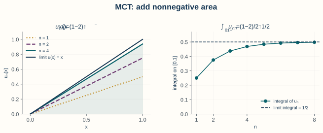
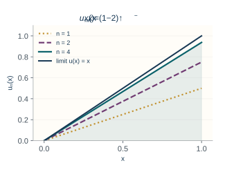
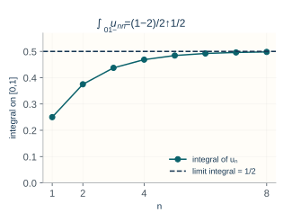
A picture of monotone increase.
On \([0,1]\), the functions \(u_n(x)=(1-2^{-n})x\) increase to \(u(x)=x\). Their integrals are \((1-2^{-n})/2\), increasing to \(1/2=\int_0^1x\,dx\). Each new graph adds nonnegative area beneath the same limiting graph. This is one illustration of MCT, not a proof for all measurable functions.
If \(g_1,g_2,\ldots\ge0\) are measurable, then the partial sums \(s_n=\sum_{k=1}^ng_k\) increase to \(\sum_{k=1}^{\infty}g_k\). MCT gives \[\int\sum_{k=1}^{\infty}g_k\,d\nu = \sum_{k=1}^{\infty}\int g_k\,d\nu,\] allowing the value \(+\infty\).
Let \(f_1,f_2,\ldots\) and \(f\) be real-valued measurable functions such that \(f_n\to f\) \(\nu\)-a.e. If there is an integrable function \(g\) satisfying \[|f_n|\le g\qquad \nu\text{-a.e. for every }n,\] then \(f\) and every \(f_n\) are integrable and \[\lim_{n\to\infty}\int f_n\,d\nu = \int f\,d\nu.\] In fact, \(\int|f_n-f|\,d\nu\to0\).
An \(L^1(\nu)\) function is a measurable function \(h\) with \(\int |h|\,d\nu<\infty\). Convergence in \(L^1\) means \(\|f_n-f\|_1:=\int|f_n-f|\,d\nu\to0\): the total absolute error, measured using \(\nu\), tends to zero. Taking absolute values prevents positive and negative errors from cancelling. This is stronger than convergence of the integrals, since \(|\int f_n\,d\nu-\int f\,d\nu|\le\int|f_n-f|\,d\nu\). The displayed DCT conclusion states this property; the notation does not add a new hypothesis.
The dominating function (or integrable envelope) must be independent of \(n\) and integrable on the whole domain. A reliable DCT calculation has three explicit lines: \[\boxed{ \begin{array}{ll} \text{pointwise limit:} & f_n\to f\text{ a.e.},\\ \text{domination:} & |f_n|\le g\text{ with }\int g<\infty,\\ \text{conclusion:} & \int f_n\to\int f. \end{array}}\] The \(L^1\) conclusion2 follows by applying the integral-convergence statement to \(|f_n-f|\), whose envelope is \(2g\) outside one null set. For a full DCT proof, see [1] (Theorem 1.5.8); the optional proof architecture explains the strategy.
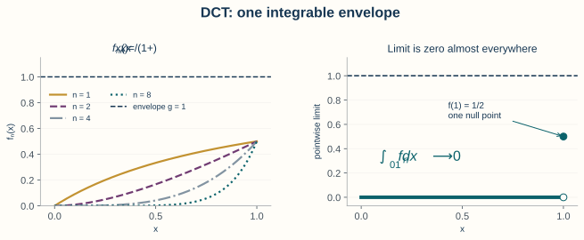
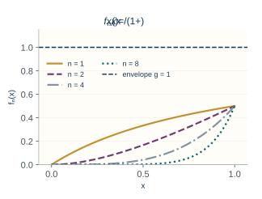
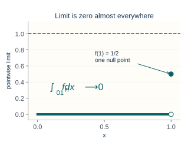
Pointwise limit. On \([0,1]\), let \[f_n(x)=\frac{x^n}{1+x}.\] For \(0\le x<1\), \(f_n(x)\to0\); the value at \(x=1\) is irrelevant to an a.e. statement.
Envelope. Also \(0\le f_n(x)\le1\), and the constant function \(1\) is integrable on \([0,1]\).
Conclusion. Hence DCT yields \[\lim_{n\to\infty}\int_0^1\frac{x^n}{1+x}\,dx=0.\]
Choosing the theorem.
If \(0\le f_n\uparrow f\), first try MCT.
If \(f_n\to f\) and there is one integrable envelope \(g\), use DCT.
If the functions are nonnegative but neither monotone nor dominated, Fatou’s lemma may still give a one-sided bound.
If none of the assumptions can be verified, do not exchange the limit and integral without another argument.
The axes stay fixed. These three curves illustrate the sequence; the argument below rules out every integrable envelope.
Sequence. On \([0,1]\), let \[f_n(x)=n\mathbf 1_{(0,1/n)}(x).\]
Limit and integral. Then \(f_n(x)\to0\) for every \(x\in[0,1]\), but \[\int_0^1f_n(x)\,dx=1.\]
No integrable envelope. The sequence is not increasing, and there is no integrable envelope, even if domination is required only a.e. for each \(n\). To see this, discard the countable union of the exceptional null sets. For \(0<x<1/4\) choose \(n=\lfloor1/(2x)\rfloor\); then \(x<1/n\) and \(n\ge1/(4x)\). Any such envelope must therefore satisfy \(g(x)\ge1/(4x)\) a.e. on \((0,1/4)\), which has infinite integral. Here the unequal integrals establish failure of the exchange; failure of a theorem’s assumptions alone would only mean that theorem cannot justify it.
If \(f_1,f_2,\ldots\) are nonnegative measurable functions, then \[\int\liminf_{n\to\infty}f_n\,d\nu \le \liminf_{n\to\infty}\int f_n\,d\nu.\]
To remember the direction, mass may escape in the limit but cannot appear from nowhere under nonnegative integration. For \(f_n=\mathbf 1_{[n,n+1]}\) on \(\R\), \[\int\liminf_nf_n\,dx=0 < 1=\liminf_n\int f_n\,dx.\] This strict inequality also shows why DCT fails: the natural envelope \(\sup_nf_n\) has infinite integral.
A short proof exposes Fatou’s connection to MCT. Define \[h_m=\inf_{n\ge m}f_n.\] Then \(0\le h_m\uparrow\liminf_nf_n\). By MCT and monotonicity, \[\int\liminf_nf_n\,d\nu = \lim_m\int h_m\,d\nu \le \lim_m\inf_{n\ge m}\int f_n\,d\nu.\]
Let \(I\subset\R\) be an open interval, let \(f\) be real valued, and suppose \(f(\cdot,\theta)\) is measurable for every \(\theta\in I\). Assume:
\(f(\cdot,\theta_0)\) is integrable for some \(\theta_0\in I\);
on one set of full \(\nu\)-measure, the map \(\theta\mapsto f(\omega,\theta)\) is differentiable on \(I\); and
there is an integrable \(g\) such that, on that same full-measure set, \(|\partial_\theta f(\omega,\theta)|\le g(\omega)\) for every \(\theta\in I\).
Then \[F(\theta)=\int f(\omega,\theta)\,d\nu(\omega)\] is differentiable on \(I\) and \[F'(\theta) = \int\partial_\theta f(\omega,\theta)\,d\nu(\omega).\]
Measurable derivative. Define the derivative to be zero off the specified full-measure set; this gives a measurable version, as a pointwise limit of measurable difference quotients.
Justification. The interval assumption lets the mean value theorem compare \(f(\cdot,\theta)\) with the integrable base point. The full difference-quotient proof in Section 6 makes both steps explicit.
Statistical use. In statistical models, this is one route to moving derivatives through likelihood integrals, but the boundary and domination conditions must be checked rather than assumed.
3. Tonelli’s and Fubini’s theorems
Set-up. Let \((\Omega_i,\F_i,\nu_i)\), \(i=1,2\), be \(\sigma\)-finite measure spaces, and let \(f\) be \((\F_1\otimes\F_2)\)-measurable.
Product convention. Recall that \(\sigma\)-finite means each space is a countable union of measurable sets of finite measure; \(\F_1\otimes\F_2\) is generated by measurable rectangles, and the product measure satisfies \((\nu_1\otimes\nu_2)(A\times B)=\nu_1(A)\nu_2(B)\). These are the product-measure conventions introduced in Lecture 2.
If \(f\ge0\), then \[\begin{split} \int_{\Omega_1\times\Omega_2}f\,d(\nu_1\otimes\nu_2) &= \int_{\Omega_2} \left[\int_{\Omega_1}f(\omega_1,\omega_2)\,d\nu_1(\omega_1)\right] d\nu_2(\omega_2)\\ &= \int_{\Omega_1} \left[\int_{\Omega_2}f(\omega_1,\omega_2)\,d\nu_2(\omega_2)\right] d\nu_1(\omega_1), \end{split}\] where the common value may be \(+\infty\).
If \[\int_{\Omega_1\times\Omega_2}|f|\, d(\nu_1\otimes\nu_2)<\infty,\] then the sections are integrable for almost every fixed value of the other coordinate, both iterated integrals are finite, and the two iterated integrals equal the product-space integral.
A measurable function \(f\) is integrable with respect to \(\nu\) if \[\int|f|\,d\nu<\infty.\] Equivalently, both \(\int f^+\,d\nu\) and \(\int f^-\,d\nu\) are finite. In this case, \[\int f\,d\nu=\int f^+\,d\nu-\int f^-\,d\nu.\]
The operational distinction.
Recall the definition of integrability: it requires a finite integral of the absolute value. The distinction between the two theorems is: \[\boxed{ \begin{array}{c|c|c} &\text{assumption}&\text{possible value}\\ \hline \text{Tonelli}&f\ge0&[0,\infty]\\ \text{Fubini}&\int|f|<\infty&\R \end{array}}\] For a signed function, checking only that one iterated integral exists is not enough; absolute integrability is the safe condition. For their proofs, see [1] (Theorem 1.7.2), which treats both cases under the name Fubini’s theorem.
Hypothesis. For \(f(x,y)=e^{-(x+y)}\) on \([0,\infty)^2\), Tonelli applies because \(f\ge0\).
Calculation. Thus \[\begin{split} \int_0^\infty\int_0^\infty e^{-(x+y)}\,dx\,dy &= \int_0^\infty e^{-y} \left(\int_0^\infty e^{-x}\,dx\right)dy\\ &=1. \end{split}\]
Consequence. The result also proves that \(f\) is integrable, so Fubini applies afterward.
With counting measure on both coordinates, Tonelli says that for \(a_{ij}\ge0\), \[\sum_{i=1}^{\infty}\sum_{j=1}^{\infty}a_{ij} = \sum_{j=1}^{\infty}\sum_{i=1}^{\infty}a_{ij},\] allowing both sides to be infinite. For signed \(a_{ij}\), the sufficient Fubini condition is \[\sum_{i=1}^{\infty}\sum_{j=1}^{\infty}|a_{ij}|<\infty.\]
Define an array by \[a_{ij}= \begin{cases} 1, & j=i,\\ -1, & j=i+1,\\ 0, & \text{otherwise}. \end{cases}\] Every row sums to zero, so \[\sum_{i=1}^{\infty}\left(\sum_{j=1}^{\infty}a_{ij}\right)=0.\] The first column sums to \(1\), and every later column sums to zero, so \[\sum_{j=1}^{\infty}\left(\sum_{i=1}^{\infty}a_{ij}\right)=1.\] There is no contradiction with Fubini because \[\sum_{i,j}|a_{ij}|=\infty.\] This example is the double-series analogue of conditionally convergent series: changing the order may change the value.
When one coordinate uses counting measure and the other uses Lebesgue measure, the same theorems justify sum-integral exchanges: \[\int\sum_{k=1}^{\infty}f_k(x)\,dx = \sum_{k=1}^{\infty}\int f_k(x)\,dx\] for nonnegative \(f_k\), or for signed \(f_k\) satisfying \(\sum_k\int|f_k|<\infty\).
4. Radon–Nikodym derivatives and statistical densities
Let \(\lambda\) and \(\nu\) be measures on the same measurable space. We write \[\lambda\ll\nu\] and say that \(\lambda\) is absolutely continuous with respect to \(\nu\) if \[\nu(A)=0\quad\Longrightarrow\quad\lambda(A)=0 \qquad\text{for every }A\in\F.\]
Let \(\lambda\) and \(\nu\) be \(\sigma\)-finite measures on \((\Omega,\F)\). If \(\lambda\ll\nu\), then there exists a nonnegative measurable function \(f\) such that \[\lambda(A)=\int_A f\,d\nu \qquad\text{for every }A\in\F.\] The function is unique \(\nu\)-a.e. and is called the Radon–Nikodym derivative, denoted by \[f=\frac{d\lambda}{d\nu}.\]
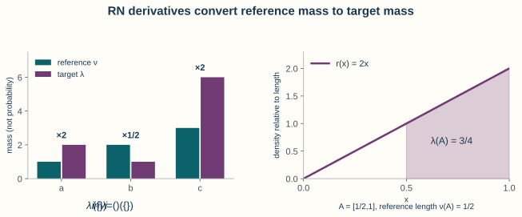
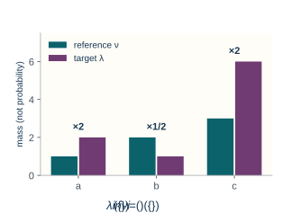
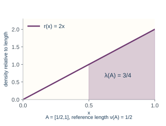
Density as reweighting.
The defining equation says that the RN derivative converts reference mass into target mass. On three points \(a,b,c\), let \(\nu\) assign masses \((1,2,3)\) and \(\lambda\) assign masses \((2,1,6)\). Their density ratio is \((2,1/2,2)\): multiply each reference mass by its ratio to recover the target. For example, on \(A=\{a,c\}\), \(\lambda(A)=8=2\nu(\{a\})+2\nu(\{c\})\). These are finite measures, not normalized probability laws.
For a continuous example on \([0,1]\), let \(\nu=m\) and \(\lambda(A)=\int_A2x\,dx\). Then \(d\lambda/dm=2x\). The target mass of \(A=[1/2,1]\) is the shaded area \(\int_{1/2}^12x\,dx=3/4\), while the reference mass is its length \(m(A)=1/2\). A density value is a weight per unit reference measure; it is not itself the probability of a point.
For the existence and uniqueness proof, see [1] (Theorem A.4.8). When \(\lambda\) is a probability measure, the derivative depends on the reference measure.
If \(\nu\) is Lebesgue measure, \(d\lambda/d\nu\) is an ordinary probability density function.
If \(\nu\) is counting measure on a countable set, \(d\lambda/d\nu\) is a probability mass function.
If \(\nu=Q\) and \(\lambda=P\) are probability measures, \(dP/dQ\) is a likelihood ratio or density ratio.
Let \(\lambda\) and \(\nu\) be measures on the same measurable space. We write \[\lambda\ll\nu\] and say that \(\lambda\) is absolutely continuous with respect to \(\nu\) if \[\nu(A)=0\quad\Longrightarrow\quad\lambda(A)=0 \qquad\text{for every }A\in\F.\]
Importance sampling estimates an expectation under \(P\) using draws from another law \(Q\) and weights \(r=dP/dQ\). For independent draws \(X_i\) from \(Q\), the average \(n^{-1}\sum_i h(X_i)r(X_i)\) has expectation \(\E_P h(X)\) when the weighted variable is integrable; its accuracy also depends on how variable the weights are.
For two specified probability models with densities \(p\) and \(q\) against a common measure, likelihood-ratio testing compares \(p(x)/q(x)\) at the observed data with a threshold. The ratio describes how the models weight the same observation; this lecture supplies the measure-theoretic identity, not a theory of choosing tests.
Changing the measure, not the coordinate.
Set-up. Recall the definition of absolute continuity of measures. Here \(P\) and \(Q\) are probability laws on \((\R,\gB(\R))\), \(P\ll Q\), and \(X(x)=x\) is the coordinate map.
Identity. Write \(r=dP/dQ\). If \(h\) is Borel measurable and \(\int|h|\,dP<\infty\), then \[\E_P[h(X)] =\int_{\R}h(x)\,dP(x) =\int_{\R}h(x)r(x)\,dQ(x) =\E_Q[h(X)r(X)].\]
Justification. The same identity holds for nonnegative \(h\), allowing \(+\infty\). The indicator-to-function proof also shows \(\int|h|\,dP=\int|h|r\,dQ\), so integrability transfers exactly.
Abstract sample space. If \(P,Q\) are instead measures on an abstract sample space and \(X\) is a separate random variable, the weight is \(r(\omega)\), not \(r(X(\omega))\).
This change-of-measure identity is used in importance sampling3 and likelihood-ratio testing4. It also appears throughout information theory.
Set-up. Let \(P=N(\mu,1)\) and \(Q=N(0,1)\). Since both have positive Lebesgue densities,
Density ratio. \[\frac{dP}{dQ}(x) = \frac{\exp\{-(x-\mu)^2/2\}}{\exp\{-x^2/2\}} = \exp\left\{\mu x-\frac{\mu^2}{2}\right\}.\]
Expectation identity. Consequently, \[\E_{N(\mu,1)}[h(X)] = \E_{N(0,1)} \left[h(X)\exp\left\{\mu X-\frac{\mu^2}{2}\right\}\right]\] whenever the expectation is integrable.
Model. Let \[\mu=\frac12\sum_{k=0}^{\infty}p_k\delta_k +\frac12 h(x)\,dx,\] where \(p_k\ge0\), \(\sum_kp_k=1\), and \(h\) is a Lebesgue density. This law has neither a pure Lebesgue density nor a pure mass function on \(\R\).
Reference measure. Define the \(\sigma\)-finite dominating measure \[\rho=m+\nu_{\mathrm{count},\N_0}, \qquad \nu_{\mathrm{count},\N_0}(A) =\sum_{k=0}^{\infty}\mathbf 1\{k\in A\}.\]
Derivative. Then \[\frac{d\mu}{d\rho}(x) = \begin{cases} \frac12p_k, & x=k\in\N_0,\\[2mm] \frac12h(x), & x\notin\N_0. \end{cases}\]
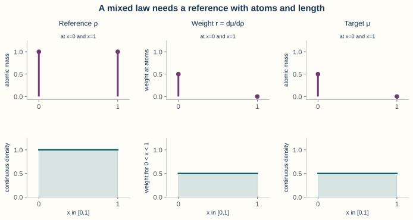
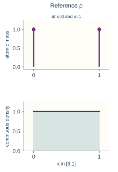
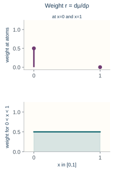
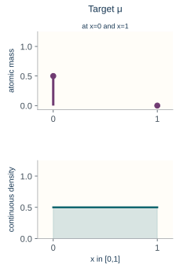
Chosen illustration. The value assigned to \(h\) at individual integers does not affect its Lebesgue integral. For the mixture illustration, choose \(p_0=1\), \(p_k=0\) for \(k\ge1\), and \(h=\mathbf 1_{[0,1]}\).
Atomic and continuous weights. On \([0,1]\), the reference \(\rho\) has length plus atoms at both endpoints; the derivative is \(1/2\) at zero and on \((0,1)\), but zero at one. Thus the target has an atom of mass \(1/2\) at zero and a continuous part of mass \(1/2\), with no atom at one.
Verification. To verify the derivative, integrate it over a Borel set \(A\): the atomic part gives \(\frac12\sum_{k\in A}p_k\), and the Lebesgue part gives \(\frac12\int_A h(x)\,dx\). Their sum is \(\mu(A)\). The reference measure is \(\sigma\)-finite because its mass on every bounded interval is finite. See Exercise 7 for a one-atom calculation and its complete solution.
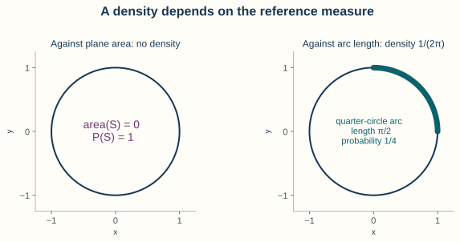
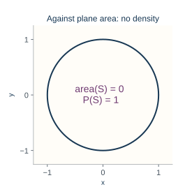
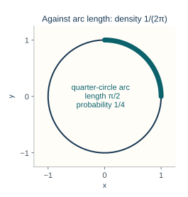
A law concentrated on a curve.
Law and support. Return to Lecture 2’s circle example: if \(U\) is uniform on \([0,2\pi]\), then \((\cos U,\sin U)\) lies on the unit circle \(S\) with probability one.
Plane area. Its law is not absolutely continuous with respect to plane area: \(S\) has area zero. Indeed, annuli of radii \(1-\epsilon\) and \(1+\epsilon\) cover it and have area \(4\pi\epsilon\to0\).
Arc length. Against arc-length measure on \(S\) (the measure assigning each arc its ordinary length), however, this law has the constant density \(1/(2\pi)\): an arc of length \(\ell\) has probability \(\ell/(2\pi)\). Failure of a density against area does not mean failure against every reference measure.
5. Technical extensions and further reading
Low priority—not examined: How the convergence theorems fit together
Implications. The standard proof architecture is economical: \[\text{simple-function construction} \Longrightarrow \text{MCT} \Longrightarrow \text{Fatou} \Longrightarrow \text{DCT}.\]
DCT strategy. For DCT, apply Fatou to the nonnegative functions \(g+f_n\) and \(g-f_n\). One obtains upper and lower bounds that force \(\int f_n\to\int f\). This proof explains why an integrable envelope controls both positive and negative fluctuations.
Reverse Fatou. There is also a useful reverse Fatou consequence. If \(f_n\le g\) for an integrable \(g\), then \[\limsup_{n\to\infty}\int f_n\,d\nu \le \int\limsup_{n\to\infty}f_n\,d\nu,\] for real-valued measurable \(f_n\) with \(f_n\le g\) a.e. The integrals are well defined in \([-\infty,\infty)\) because \(f_n^+\le g^+\); the same holds for the limsup, with no \(+\infty-\infty\) subtraction. Apply Fatou to \(g-f_n\) and subtract from the finite number \(\int g\).
Low priority—not examined: Change of variables for densities
A \(C^1\) diffeomorphism is a change of coordinates whose forward and inverse maps are continuously differentiable. The Jacobian is the matrix of first partial derivatives; its determinant describes the local signed volume scaling. The density formula uses the absolute value of the inverse Jacobian determinant.
Assumptions. Suppose \(X\) has Lebesgue density \(f_X\) on \(\R^k\) and \(g:\R^k\to\R^k\) is Borel measurable. Let \(A_1,\ldots,A_m\) be pairwise disjoint open sets with \(P(X\in\bigcup_j A_j)=1\). Suppose each restriction \(g|_{A_j}\) is a \(C^1\) diffeomorphism onto its open image: it is a bijection and both it and its inverse have continuous first partial derivatives.5 Its Jacobian is nonsingular (has nonzero determinant). The images may overlap even though the source branches are disjoint.
Density formula. If \(g_j^{-1}\) denotes the inverse on \(g(A_j)\), then the density of \(Y=g(X)\) is \[f_Y(y) = \sum_{j=1}^m f_X(g_j^{-1}(y)) \left|\det Dg_j^{-1}(y)\right| \mathbf 1\{y\in g(A_j)\}.\]
Branchwise justification. Each summand is defined to be zero outside \(g(A_j)\); do not evaluate \(g_j^{-1}\) there. The indicator factors are essential: an inverse branch contributes only on its image. For a Borel set \(B\), split \(P(g(X)\in B)\) over the disjoint \(A_j\) and apply the ordinary change-of-variables theorem on each branch. This yields \(\int_B f_Y(y)\,dy\) and proves the formula; the coverage assumption ensures no probability mass has been omitted. This formula is a special, coordinate-based way to compute a pushforward law; the measure-theoretic definition remains \(P_Y=P_X\circ g^{-1}\).
Further reading: References and directions for self-study
The integration and convergence results in this lecture are developed from a probability perspective in [1] and from a mathematical-statistics perspective in [4]. For a fuller real-analysis treatment of Lebesgue integration, absolute continuity, signed measures, and the Radon–Nikodym theorem, see [3].
The author’s freely available January 2019 fifth-edition draft of Durrett contains the numbered results cited here. Proof routes are Sections 1.4–1.5 for integral construction and convergence, Theorem 1.6.9 for pushforward expectations, Theorem 1.7.2 for product integration, and Theorem A.4.8 for RN derivatives.
A family \(\{X_i\}\) of integrable random variables is uniformly integrable if \(\sup_i\E[|X_i|\mathbf 1\{|X_i|>K\}]\to0\) as \(K\to\infty\). Large values then contribute uniformly little to their expectations.
A signed measure is a countably additive set function that may take positive and negative values. For a finite signed measure, the Hahn decomposition separates positive and negative regions, and the Jordan decomposition writes it as the difference of two finite positive measures concentrated on those respective regions.
For integrable \(X\) and a sub-sigma-algebra \(\mathcal G\), conditional expectation \(\E[X\mid\mathcal G]\) is a \(\mathcal G\)-measurable random variable with the same integral as \(X\) over every event in \(\mathcal G\). It represents an average based only on the information in \(\mathcal G\).
Useful next topics include:
uniform integrability, which generalizes domination in many expectation-limit problems;6
signed measures and the Hahn–Jordan decomposition;7
conditional expectation as a Radon–Nikodym derivative;8
parameter-dependent integrals with weaker local domination conditions; and
importance sampling and change-of-measure methods in computation.
6. Exercises and complete solutions9 exercises · complete solutions
On \(([0,1],\gB([0,1]),m)\), let \[f(x)=3\mathbf 1_{[0,1/4]}(x) -2\mathbf 1_{(1/4,3/4]}(x) +\mathbf 1_{(3/4,1]}(x).\]
Find \(f^+\), \(f^-\), and \(|f|\).
Compute \(\int f\,dx\) and \(\int|f|\,dx\).
Verify directly that \(f\) is integrable.
Reveal solution
The positive and negative parts are \[\begin{split} f^+(x) &=3\mathbf 1_{[0,1/4]}(x) +\mathbf 1_{(3/4,1]}(x),\\ f^-(x) &=2\mathbf 1_{(1/4,3/4]}(x), \end{split}\] and \[|f(x)| =3\mathbf 1_{[0,1/4]}(x) +2\mathbf 1_{(1/4,3/4]}(x) +\mathbf 1_{(3/4,1]}(x).\] Therefore \[\int f^+\,dx=3\left(\frac14\right)+1\left(\frac14\right)=1, \qquad \int f^-\,dx=2\left(\frac12\right)=1.\] It follows that \[\int f\,dx=1-1=0, \qquad \int|f|\,dx=1+1=2<\infty.\] The last inequality verifies integrability.
For each sequence, identify an applicable theorem and evaluate the limit of the integrals when justified. Use Lebesgue measure in each case.
\(f_n(x)=\mathbf 1_{[0,n]}(x)\) on \(\R\).
\(f_n(x)=x^n\) on \([0,1]\).
\(f_n(x)=n\mathbf 1_{(0,1/n)}(x)\) on \([0,1]\).
\(f_n(x)=(1+x/n)^n e^{-2x}\) on \([0,\infty)\).
Reveal solution
For (1), \(0\le f_n\uparrow1\) pointwise on \([0,\infty)\) and to zero on \((-\infty,0)\). MCT gives \[\lim_n\int_\R f_n\,dx = \int_\R\mathbf 1_{[0,\infty)}\,dx =\infty.\]
For (2), \(x^n\to0\) for \(x\in[0,1)\), and the exceptional point \(x=1\) has measure zero. Since \(0\le x^n\le1\) and \(1\) is integrable on \([0,1]\), DCT gives \[\lim_n\int_0^1x^n\,dx=0.\]
For (3), \(f_n\to0\) pointwise, but \(\int_0^1f_n\,dx=1\) for every \(n\). The sequence is not increasing, and there is no integrable domination that would permit DCT. Thus neither MCT nor DCT justifies an exchange; in fact the exchange is false.
For (4), \((1+x/n)^n\to e^x\), so \(f_n(x)\to e^{-x}\). The inequality \(1+u\le e^u\) gives \[0\le f_n(x)\le e^x e^{-2x}=e^{-x},\] and \(e^{-x}\) is integrable on \([0,\infty)\). DCT yields \[\lim_n\int_0^\infty(1+x/n)^n e^{-2x}\,dx = \int_0^\infty e^{-x}\,dx=1.\]
Let \(g_1,g_2,\ldots\) be nonnegative measurable functions on \((\Omega,\F,\nu)\). Prove \[\int\sum_{k=1}^{\infty}g_k\,d\nu = \sum_{k=1}^{\infty}\int g_k\,d\nu.\] Then apply the result on \([0,1]\) to \(g_k(x)=x^{k-1}(1-x)\).
Reveal solution
The partial sums \[s_n=\sum_{k=1}^ng_k\] are nonnegative measurable functions with \(s_n\uparrow\sum_{k=1}^{\infty}g_k\). MCT and finite linearity give \[\int\sum_{k=1}^{\infty}g_k\,d\nu = \lim_{n\to\infty}\int s_n\,d\nu = \lim_{n\to\infty}\sum_{k=1}^n\int g_k\,d\nu = \sum_{k=1}^{\infty}\int g_k\,d\nu.\]
For \(0\le x<1\), \[\sum_{k=1}^{\infty}x^{k-1}(1-x)=1.\] The equality also holds a.e. on \([0,1]\); the endpoint \(x=1\) is irrelevant. Therefore \[1=\int_0^1 1\,dx =\sum_{k=1}^{\infty}\int_0^1x^{k-1}(1-x)\,dx.\] Indeed, the \(k\)th integral equals \(1/k-1/(k+1)=1/[k(k+1)]\), recovering the telescoping identity \(\sum_{k\ge1}1/[k(k+1)]=1\).
Let \(f(x,y)=\mathbf 1\{0\le x\le y\le1\}\).
Evaluate \(\int_0^1\int_0^1f(x,y)\,dx\,dy\).
Reverse the order and verify the same value.
State precisely why the exchange is valid.
Reveal solution
For fixed \(y\in[0,1]\), the allowed \(x\) values form \([0,y]\), so \[\int_0^1\int_0^1f(x,y)\,dx\,dy = \int_0^1\left(\int_0^y1\,dx\right)dy = \int_0^1y\,dy=\frac12.\] For fixed \(x\), the allowed \(y\) values form \([x,1]\), so \[\int_0^1\int_0^1f(x,y)\,dy\,dx = \int_0^1\left(\int_x^11\,dy\right)dx = \int_0^1(1-x)\,dx=\frac12.\] The function is nonnegative and measurable, so Tonelli’s theorem permits the exchange. Since its integral is finite, Fubini’s theorem also applies.
On \(\R\), let \(f_n=\mathbf 1_{[n,n+1]}\).
Compute \(\liminf_nf_n(x)\) for every fixed \(x\).
Verify the two sides of Fatou’s inequality.
Explain why DCT cannot be applied using \(g=\sup_nf_n\).
Reveal solution
For fixed \(x\), only finitely many intervals \([n,n+1]\) can contain \(x\). Therefore \(f_n(x)=0\) eventually and \(\liminf_nf_n(x)=0\). Hence \[\int_\R\liminf_nf_n\,dx=0.\] On the other hand, \(\int_\R f_n\,dx=1\) for every \(n\), so \[\liminf_n\int_\R f_n\,dx=1.\] Fatou’s inequality reads \(0\le1\) and is strict.
The envelope \(g=\sup_nf_n\) equals one on an unbounded union of unit intervals (up to endpoints and the initial location), so \(\int_\R g\,dx=\infty\). It is not an integrable dominating function, and DCT does not apply.
For \[a_{ij}= \begin{cases} 1,&j=i,\\ -1,&j=i+1,\\ 0,&\text{otherwise}, \end{cases}\] compute both iterated sums and \(\sum_{i,j}|a_{ij}|\). Identify the failed Fubini assumption.
Reveal solution
For each fixed row \(i\), the only nonzero entries are \(a_{ii}=1\) and \(a_{i,i+1}=-1\), so \[\sum_{j=1}^{\infty}a_{ij}=0 \quad\text{and}\quad \sum_{i=1}^{\infty}\sum_{j=1}^{\infty}a_{ij}=0.\] In column \(1\), the sum is \(1\). For each column \(j\ge2\), the entries \(a_{jj}=1\) and \(a_{j-1,j}=-1\) cancel. Hence \[\sum_{j=1}^{\infty}\sum_{i=1}^{\infty}a_{ij}=1.\] Every row contributes two units to the absolute sum: \[\sum_{i=1}^{\infty}\sum_{j=1}^{\infty}|a_{ij}| = \sum_{i=1}^{\infty}2 =\infty.\] The array is signed and not absolutely summable, so neither Tonelli’s nonnegativity condition nor Fubini’s absolute-integrability condition holds.
Let \[\mu=\frac12\delta_0+\frac12\phi(x)\,dx, \qquad \rho=\delta_0+m,\] where \(\phi\) is the standard normal density and \(m\) is Lebesgue measure.
Show that \(\mu\ll\rho\).
Find \(d\mu/d\rho\).
Verify that \(\int(d\mu/d\rho)\,d\rho=1\).
Reveal solution
If \(\rho(A)=0\), then both \(\delta_0(A)=0\) and \(m(A)=0\). Therefore \[\mu(A) =\frac12\delta_0(A)+\frac12\int_A\phi(x)\,dx=0,\] so \(\mu\ll\rho\).
A valid derivative is \[r(x)=\frac{d\mu}{d\rho}(x) = \begin{cases} \frac12,&x=0,\\[1mm] \frac12\phi(x),&x\ne0. \end{cases}\] Indeed, the \(\delta_0\) component of \(\rho\) reads the value \(r(0)=1/2\), while its Lebesgue component integrates \(r(x)=\phi(x)/2\) a.e.; the value at the singleton zero does not affect the Lebesgue integral. Finally, \[\int r\,d\rho = \int r\,d\delta_0+\int r\,dm = \frac12+\frac12\int_\R\phi(x)\,dx=1.\]
Let \(h\ge0\) be measurable and satisfy \[\int_0^\infty(1+x)h(x)\,dx<\infty,\] and define \[F(\theta)=\int_0^\infty e^{-\theta x}h(x)\,dx, \qquad \theta>0.\] Show that \[F'(\theta) = -\int_0^\infty xe^{-\theta x}h(x)\,dx.\]
Reveal solution
Fix \(\theta>0\) and choose a neighborhood \(I=(\theta/2,3\theta/2)\). For \(t\in I\), \[\left|\frac{\partial}{\partial t} e^{-tx}h(x)\right| = xe^{-tx}h(x) \le xh(x).\] The function \(xh(x)\) is integrable by assumption. Also \(e^{-tx}h(x)\) is integrable because it is bounded by \(h(x)\), which is integrable. The differentiation-under-the-integral theorem therefore gives \[F'(\theta) = \int_0^\infty\frac{\partial}{\partial\theta} \{e^{-\theta x}h(x)\}\,dx = -\int_0^\infty xe^{-\theta x}h(x)\,dx.\]
Low priority—not examined: Optional practice: many-to-one change of variables
Let \(X\) have a continuous density \(f_X\) on \(\R\), and let \(Y=X^2\). Find the density of \(Y\) on \((0,\infty)\). Specialize your answer to \(X\sim N(0,1)\).
Reveal solution
For \(y>0\), the map \(g(x)=x^2\) has the two inverse branches \(g_1^{-1}(y)=\sqrt y\) and \(g_2^{-1}(y)=-\sqrt y\). Each inverse derivative has absolute value \(1/(2\sqrt y)\). Therefore \[f_Y(y) = \frac{f_X(\sqrt y)+f_X(-\sqrt y)}{2\sqrt y}, \qquad y>0,\] and \(f_Y(y)=0\) for \(y<0\). There is no atom at zero when \(X\) has a continuous density.
For a standard normal \(X\), symmetry gives \[f_Y(y) = \frac{1}{\sqrt{2\pi y}}e^{-y/2}, \qquad y>0,\] which is the \(\chi_1^2\) density.
Proof details for linked claims
Representation and approximation.
For the simple-function integral, extend two finite disjoint representations by a zero coefficient on the complement, so each is a partition of \(\Omega\). Refine the two partitions to their intersections \(C_{ij}=A_i\cap B_j\). On a nonempty \(C_{ij}\) the two coefficients agree, since they are values of the same function. Finite additivity gives \[\sum_i a_i\nu(A_i) =\sum_{i,j}a_i\nu(C_{ij}) =\sum_{i,j}b_j\nu(C_{ij}) =\sum_j b_j\nu(B_j).\] All terms are nonnegative, with \(0\cdot\infty=0\), so no undefined subtraction occurs.
For a nonnegative measurable \(f\), an explicit simple approximation is \[\phi_n(\omega)= \begin{cases} 2^{-n}\lfloor2^nf(\omega)\rfloor,& f(\omega)<n,\\ n,&f(\omega)\ge n. \end{cases}\] Its finitely many level sets are measurable inverse images of intervals. Refining the dyadic mesh rounds downward by less and increasing the cap cannot lower a value; hence \(0\le\phi_n\le\phi_{n+1}\le f\). At a point with finite \(f\), eventually \(f<n\) and \(0\le f-\phi_n<2^{-n}\); at a point with \(f=\infty\), \(\phi_n=n\). Thus \(\phi_n\uparrow f\). This proves the approximation assertion without using MCT; applying MCT afterward gives \(\int\phi_n\uparrow\int f\).
From the sample space to the law.
Let \(X:(\Omega,\F,P)\to(\R,\gB(\R))\) be measurable and \(P_X(B)=P(X^{-1}(B))\). For an indicator \(h=\mathbf 1_B\), \[\int_\Omega h(X)\,dP=P(X\in B)=P_X(B)=\int_\R h\,dP_X.\] Finite linearity proves the identity for nonnegative simple \(h\). For nonnegative Borel \(h\), take simple \(h_n\uparrow h\) and apply MCT on both spaces. Finally apply that result to \(h^+\) and \(h^-\). It gives equality for every well-defined signed integral and, in particular, \(\int|h(X)|\,dP=\int|h|\,dP_X\). For integrable \(h\), both positive and negative integrals are finite and can be subtracted. This proves the pushforward identity with its conditions.
From one measure to another.
Suppose \(P\ll Q\) are probability measures on a common measurable space and \(r=dP/dQ\). The RN defining identity says \(\int\mathbf 1_A\,dP=P(A)=\int\mathbf 1_A r\,dQ\). By finite linearity it holds for nonnegative simple functions; simple approximation and MCT extend it to every nonnegative measurable \(h\). Apply the result to \(|h|\) to obtain \[\int |h|\,dP=\int |h|r\,dQ.\] If this value is finite, apply the nonnegative identity to \(h^+\) and \(h^-\) and subtract. Thus \(\int h\,dP=\int hr\,dQ\). Setting \(h=1\) also gives \(\int r\,dQ=P(\Omega)=1\). When the common space is the line, \(X(x)=x\) gives the coordinate notation in Section 4. On an abstract space replace \(h\) by \(h\circ X\); the density remains \(r(\omega)\) because it changes the measure on that space.
Why the difference quotients are dominated.
Under Theorem 4, work on the common measurable full-measure set where all derivatives exist and are bounded by \(g\). For any \(\theta\in I\), the segment joining \(\theta_0\) and \(\theta\) lies in \(I\), and the mean value theorem gives \[|f(\omega,\theta)| \le |f(\omega,\theta_0)|+|\theta-\theta_0|g(\omega).\] The right side is integrable, so \(F(\theta)\) is finite throughout \(I\). Fix \(\theta\) and take any nonzero sequence \(t_n\to0\) with \(\theta+t_n\in I\). The measurable difference quotients \[q_n(\omega)=\frac{f(\omega,\theta+t_n)-f(\omega,\theta)}{t_n}\] satisfy \(|q_n|\le g\) on the same set and converge there to \(\partial_\theta f(\omega,\theta)\). Defining that derivative to be zero off the set gives a measurable version, dominated by \(g\) a.e. DCT and linearity now yield \[\lim_{n\to\infty}\frac{F(\theta+t_n)-F(\theta)}{t_n} =\lim_{n\to\infty}\int q_n\,d\nu =\int\partial_\theta f(\omega,\theta)\,d\nu.\] This holds for every such sequence, so the ordinary derivative exists and has the asserted value. Neither the null set nor the envelope changes with \(\theta\) within \(I\).
References
Terminology notes
Cantor function · Low — not examined
The Cantor function is a continuous, nondecreasing function on \([0,1]\) that rises from zero to one while remaining constant on every interval removed in the middle-thirds construction of the Cantor set. Those removed intervals have total length one, so its derivative is zero a.e.; the function is not absolutely continuous.↩︎
An \(L^1(\nu)\) function is a measurable function \(h\) with \(\int |h|\,d\nu<\infty\). Convergence in \(L^1\) means \(\|f_n-f\|_1:=\int|f_n-f|\,d\nu\to0\): the total absolute error, measured using \(\nu\), tends to zero. Taking absolute values prevents positive and negative errors from cancelling. This is stronger than convergence of the integrals, since \(|\int f_n\,d\nu-\int f\,d\nu|\le\int|f_n-f|\,d\nu\). The displayed DCT conclusion states this property; the notation does not add a new hypothesis.↩︎
Importance sampling estimates an expectation under \(P\) using draws from another law \(Q\) and weights \(r=dP/dQ\). For independent draws \(X_i\) from \(Q\), the average \(n^{-1}\sum_i h(X_i)r(X_i)\) has expectation \(\E_P h(X)\) when the weighted variable is integrable; its accuracy also depends on how variable the weights are.↩︎
For two specified probability models with densities \(p\) and \(q\) against a common measure, likelihood-ratio testing compares \(p(x)/q(x)\) at the observed data with a threshold. The ratio describes how the models weight the same observation; this lecture supplies the measure-theoretic identity, not a theory of choosing tests.↩︎
C1 diffeomorphism · Low — not examined
A \(C^1\) diffeomorphism is a change of coordinates whose forward and inverse maps are continuously differentiable. The Jacobian is the matrix of first partial derivatives; its determinant describes the local signed volume scaling. The density formula uses the absolute value of the inverse Jacobian determinant.↩︎
Uniform integrability · Further reading
A family \(\{X_i\}\) of integrable random variables is uniformly integrable if \(\sup_i\E[|X_i|\mathbf 1\{|X_i|>K\}]\to0\) as \(K\to\infty\). Large values then contribute uniformly little to their expectations.↩︎
Signed measures and Hahn–Jordan decomposition · Further reading
A signed measure is a countably additive set function that may take positive and negative values. For a finite signed measure, the Hahn decomposition separates positive and negative regions, and the Jordan decomposition writes it as the difference of two finite positive measures concentrated on those respective regions.↩︎
Conditional expectation · Further reading
For integrable \(X\) and a sub-sigma-algebra \(\mathcal G\), conditional expectation \(\E[X\mid\mathcal G]\) is a \(\mathcal G\)-measurable random variable with the same integral as \(X\) over every event in \(\mathcal G\). It represents an average based only on the information in \(\mathcal G\).↩︎
Comments
Ask a question, discuss an idea, or report a typo. Include a section or exercise number when relevant.
Comments are not open yet.
Email the instructor for a private question or if comments are unavailable.